Chapter 1 High throughput sequencing
Learning Objectives
- The aim of this chapter is to provide an overview of RNA-seq technology.
- The main steps of an RNA-seq experiment will be described, from library preparation to the sequencing process.
- We will explore FASTQ files and learn how to process them through a typical RNA-seq pipeline, including quality control, read alignment, and gene quantification.
See also RNA Sequencing Data: Hitchhiker’s Guide to Expression Analysis (Van den Berge et al. 2019) for further details on RNA-seq technology and data analysis.
1.1 RNA-seq library preparation
The starting point of a RNAseq experiment is the cDNA library preparation. RNA is first isolated from cells and purified to remove ribosomal RNA which constitute the majority of total RNA. This can be done by extracting poly(A) RNA or by depleting rRNA. Purified RNA is then fragmented, reverse transcribed and adapters are ligated to both extremities to allow for amplification and sequencing.
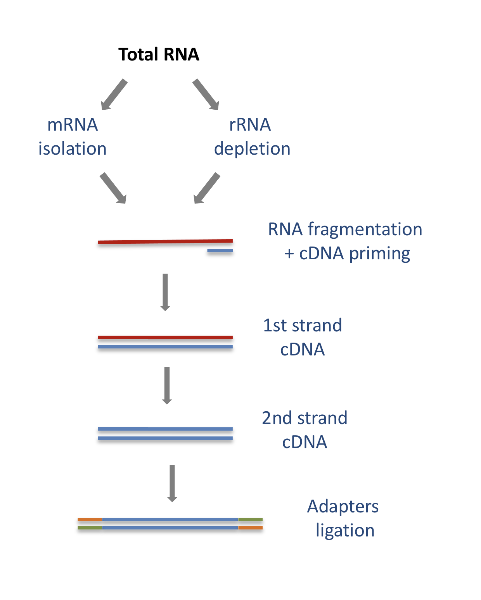
1.1.1 Stranded versus unstranded libraries
The library preparation presented above corresponds to an unstranded protocol.
As both cDNA strands will be amplified for sequencing, about half of the reads will be sequenced from the first cDNA strand, and half of the reads will be sequenced from the second strand cDNA. But we won’t know which strand was sequenced! So we lose the information about the orientation of the transcript.
This can be avoided by using a stranded protocol. In this case, dUTPs are added during the 2nd strand cDNA synthesis and the newly synthesised cDNA strand is degraded after the ligation step. This allows to infer the transcript orientation because only the first cDNA strand will be sequenced. Indeed, if the sequence of the read corresponds to the the sense strand of DNA, it means that the gene was originally transcribed in a sense orientation. On the contrary, if the read is complementary to the sense strand of DNA, it means that it was originally transcribed in antisense.
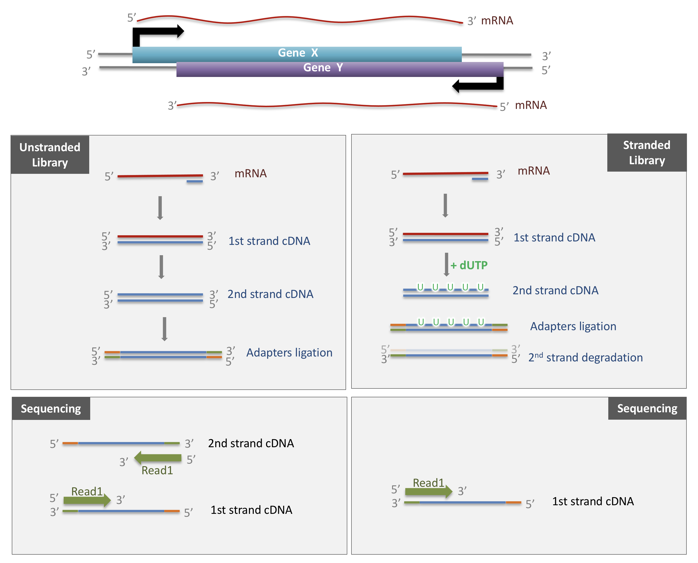
Strand-specificity leads to lower number of ambiguous reads.
1.2 Sequencing
1.2.1 SE vs PE sequencing
Once the library is ready, molecules from the library are sequenced in a high throughput manner to obtain short sequences from one end (single-end sequencing) or both ends (pair-end sequencing). Single-end sequencing is cheaper, but Paired-end sequencing improves the ability to localise the fragment in the genome and resolve mapping close to repeat regions, resulting in less multimapping reads.
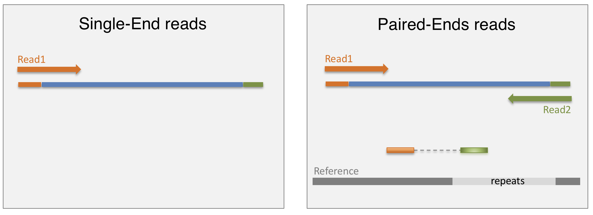
1.2.2 Cluster amplification
The sequencing is done by a cluster amplification process.
The library preparation is hybridised to a flow cell coated with immobilised oligonucleotides that serve as support to hold the DNA strands in place during sequencing. The templates are copied from the hybridised primers by 3’ extension using a high-fidelity DNA polymerase. The original templates are denatured, leaving the copies immobilised on the flow cell surface.
Immobilised DNA template copies are then amplified by bridge amplification. The templates loop over to hybridise to adjacent oligonucleotides. DNA polymerase copies the templates from the hybridised oligonucleotides, forming dsDNA bridges, which are denatured to form two ssDNA strands. These two strands loop over and hybridise to adjacent oligonucleotides and are extended again to form two new dsDNA loops. The process is repeated on each template by cycles of denaturation and amplification to create millions of individual, dense clonal clusters containing ~2,000 molecules.
Each cluster of dsDNA bridges is denatured, and the reverse strand is removed by specific base cleavage, leaving the forward DNA strand. The 3’-ends of the DNA strands and flow cell-bound oligonucleotides are blocked to prevent interference with the sequencing reaction. The sequencing primer is hybridised to the Illumina adapter. Clusters are ready for sequencing.
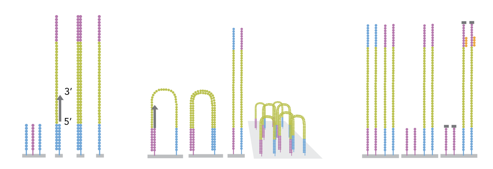
The sequencing process is done by synthesis. A polymerase adds a fluorescently tagged dNTP to the DNA strand (only one base is able to be added per round due to the fluorophore acting as a blocking group, but the blocking group is reversible). Each of the four bases has a unique fluorophore, and after each round, the machine records which base was added. The fluorophore is then washed away and the process is repeated.
For a dynamic view of the cluster amplification process, watch the Illumina video.
1.3 fastq files
The sequence data generated from the sequencer are received in text
files called fastq files. For a single-end run, one fastq file is
created for each sample. For a paired-end run, two separated fastq
files are generated, each containing sequences from one end.
What does a FASTQ file look like?
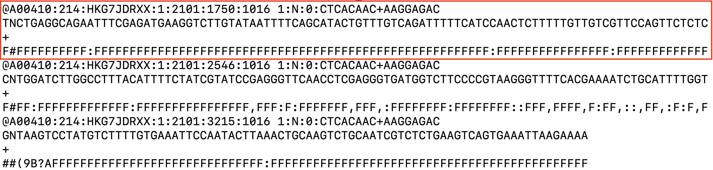
Each entry in a fastq file consists of 4 lines:
- A sequence identifier (by convention preceded by ‘@’) with information about the sequencing run
- The sequence
- A delimiter, always starting by the sign ‘+’
- The base call quality scores. These are Phred scores, encoded using ASCII characters to represent the numerical quality scores. Each character is assigned a quality score between 0 and 40. Quality scores represent the probability that the corresponding nucleotide call is correct.
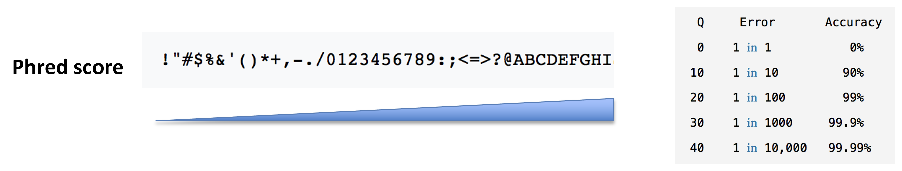
1.4 Processing pipeline
The raw reads from fastq files will need to pass through a different tools to yield ultimately a count table, representing a snapshot of individual gene expression levels. The execution of this set of tools in a specified order is commonly referred to as a pipeline.
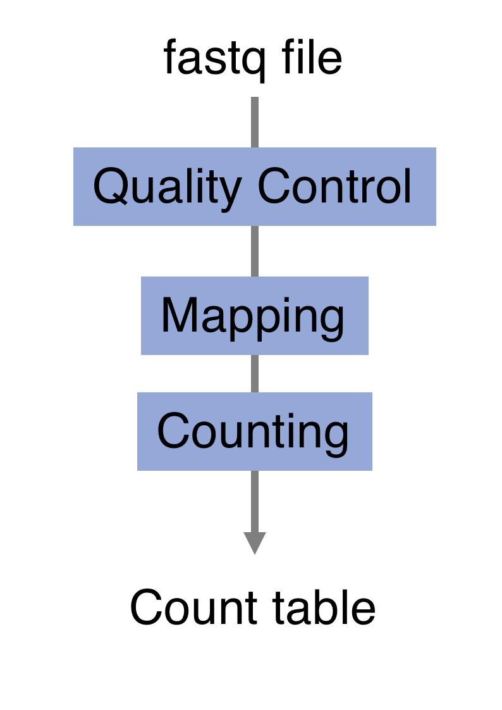
You can download the whole script that we will use to process the RNAseq data by clicking here
1.4.1 Quality control
Of course, no one will analyse the sequences from the fastq file one by one to check their quality… Rather, a software called FastQC can be used. Then, another program such as Trimmomatics can help to clean the reads.
- FastQC
FastQC allows to analyse different features of the reads and generates a report that includes several diagnostic plots to highlight any problem the data may have.
FastQC is run from the command line:
Question
Try to interpret the different plots of this fastQC report from a real RNAseq fastq file.
Another report corresponding to bad quality data can be used as a point of comparison.
Solution
1. Per base sequence quality
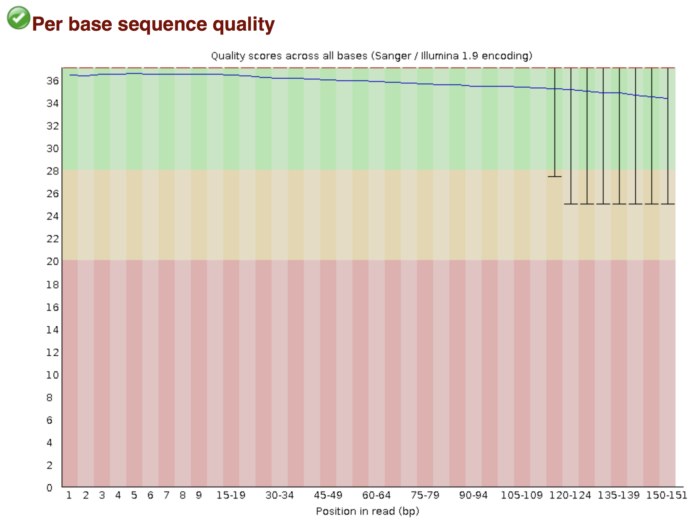
This graph shows an overview of the range of quality values (Phred scores) across all bases at each position. In this example, the sample contains reads that are 150 bp long. For each position, a boxplot is drawn with the median value, represented by the red line. The mean quality is represented by the blue line. The background of the graph divides the y-axis into very good quality scores (green), scores of reasonable quality (orange), and reads of poor quality (red). Here the quality of reads is very good.
This graph would for example represent low quality reads:
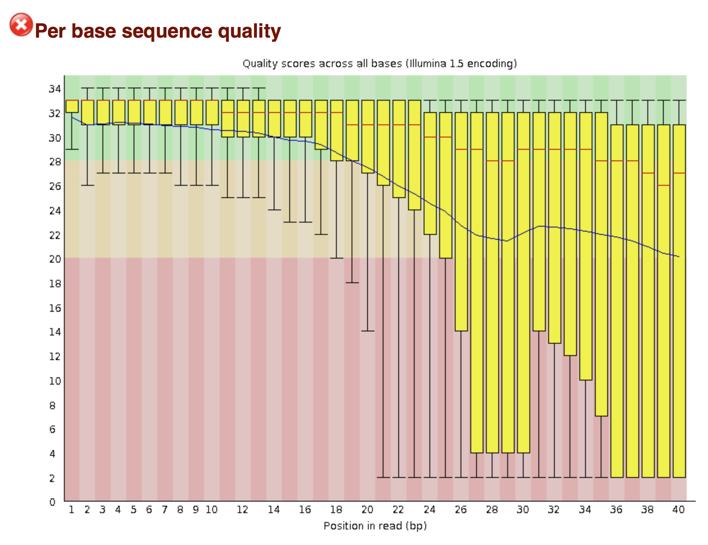
2. Per tile sequence quality:
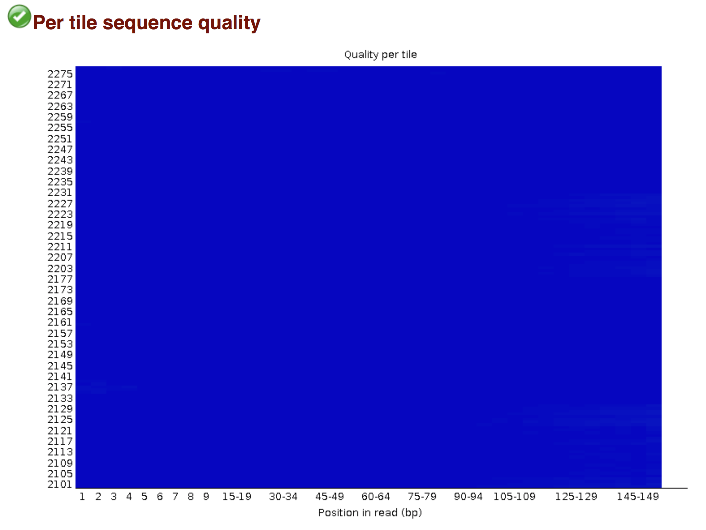
Flowcells are divided into tiles. The graph allows to look at the quality scores from each tile across the reads to see if there is a loss in quality associated with one part of the flowcell. The plot shows the deviation from the average quality for each tile. Cold colours being positions where the quality was at or above the average for that base in the run, and hotter colours indicate that a tile had worse qualities than other tiles for that base. Low scores are often found around the edges, but hot spots can also occur in the middle (due to an air bubble for example), however these should represent only a small percentage of the total sequences. In this example no tile shows poor quality.
This graph would for example show some lower quality tiles:
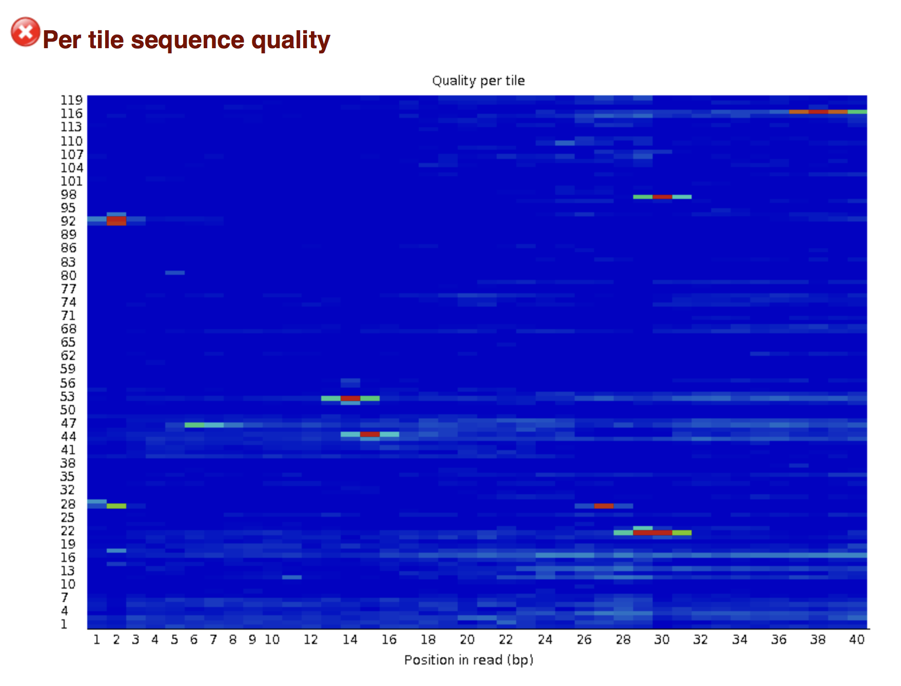
3. Per sequence quality scores
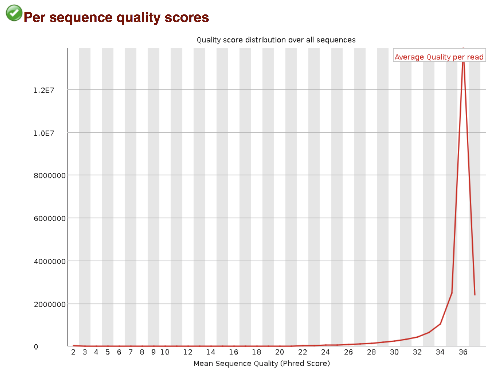
It represents a density plot of average quality per read. The distribution of average read quality should show a tight peak in the upper range of the plot. It could report a subset of sequences with low quality values, however these should represent only a small percentage of the total sequences.
4. Per base sequence content
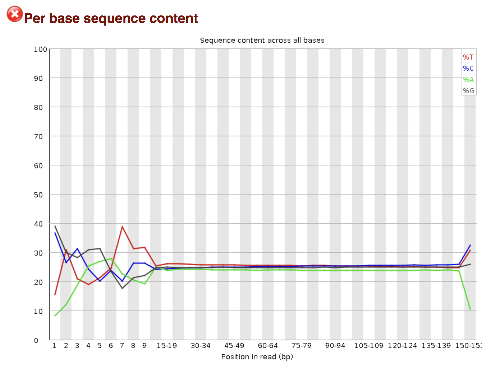
It plots the proportion of each base position over all the reads. Typically, we expect to see each base roughly 25% of the time at each position so the lines in this plot should run parallel with each other. Experience has shown that RNAseq libraries often have a selection bias in around the first 12bp of each run. This is due to a biased selection of random primers, but doesn’t represent any individually biased sequences. This is a typical plot obtained for RNAseq reads.
When Analysing DNA, the figure could look like this:
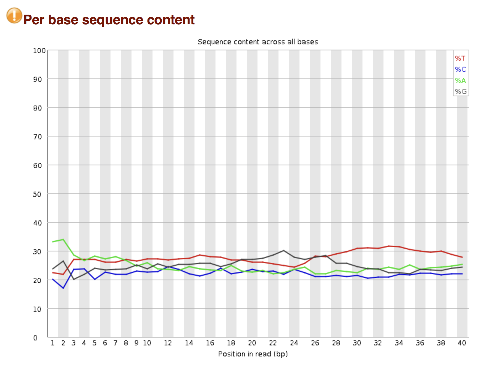
5. Per sequence GC content
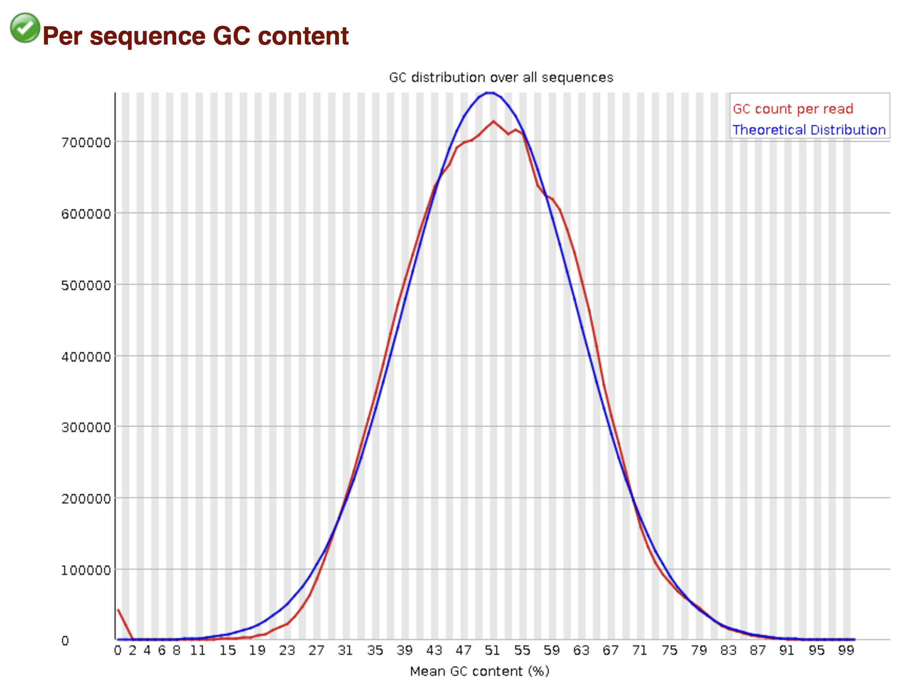
It gives the GC distribution across the reads.
This plot makes more sense for whole genome shotgun sequencing, as the overall GC content should reflect the GC content of the underlying genome. (Note that since the software doesn’t know the the GC content of the genome, the theoretical distribution is calculated from the observed data).
An unexpected distribution could indicate a contaminated library.
For RNA sequencing, this plot makes less sense, as over-represented sequences might generate an unexpected distribution.
6. Per base N content
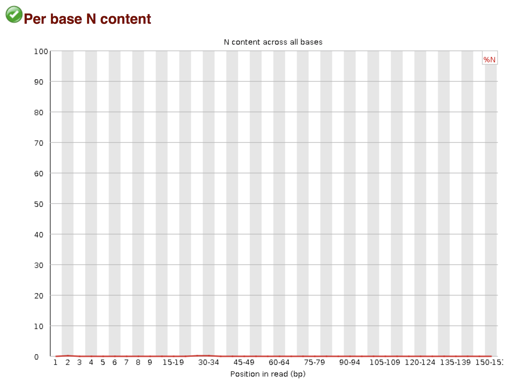
If a sequencer is unable to make a base call with sufficient confidence then it will replace the conventional base call with an ‘N’. This graph plots the percent of times that ‘N’ occurs at a position in all reads. If there was an increase at a particular position, it could indicate that something went wrong during sequencing.
7. Sequence Length Distribution
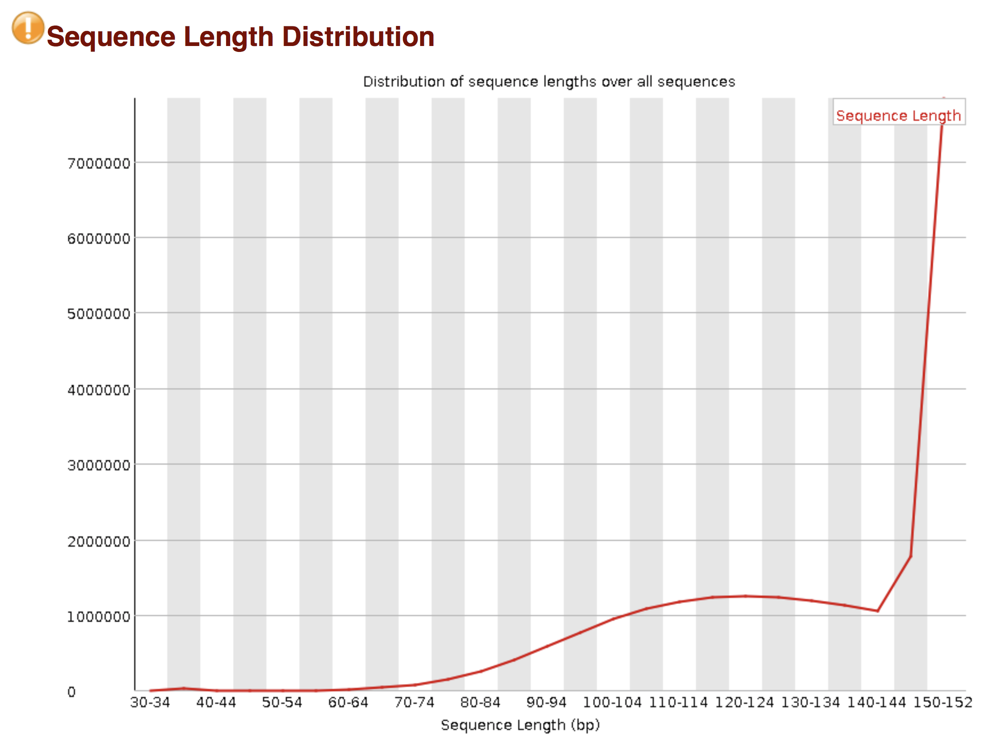
The distribution of sequence lengths of all reads in the file. Here we see that most reads are 150 pb long but some reads are shorter.
8. Sequence Duplication Levels:
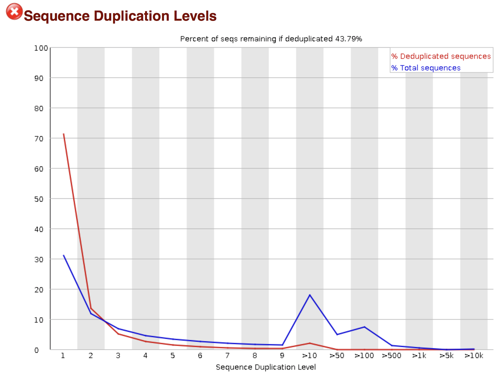
It gives the distribution of duplicated reads. The blue line corresponds to the percentage of duplicated reads among total number of reads. The red line corresponds to the percentage of duplicated reads among total number of distinct reads.
In a highly diverse library from whole genome shotgun sequencing, almost all the reads are expected to be unique, appearing only 1 time in the sequence data. A high level of duplication could indicate biased PCR enrichment, or presence of contaminant.
In contrast, in RNAseq, there will likely be some very highly abundant transcripts for which it is expected to observe duplicated reads. Here the data was flagged as ‘failed’ by FastQC even though duplication was expected in this case.
9. Overrepresented sequences
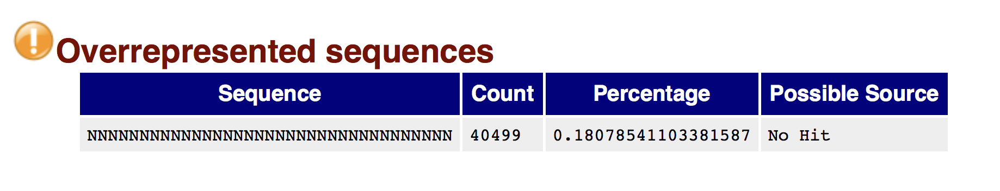
FastQC lists here all of the sequence which make up more than 0.1% of the total. Finding that a single sequence is highly over-represented in the set means that it is either highly biologically significant, or that the library is biased or contaminated. Here it is of course not relevant as it just corresponds to a sequence full of ‘N’.
10. Adapter Content
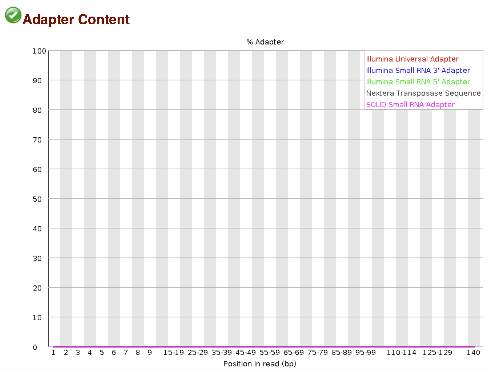
This graph indicates if and where adapter sequences occur in the reads.
If residual adapters were present we could see something like this:
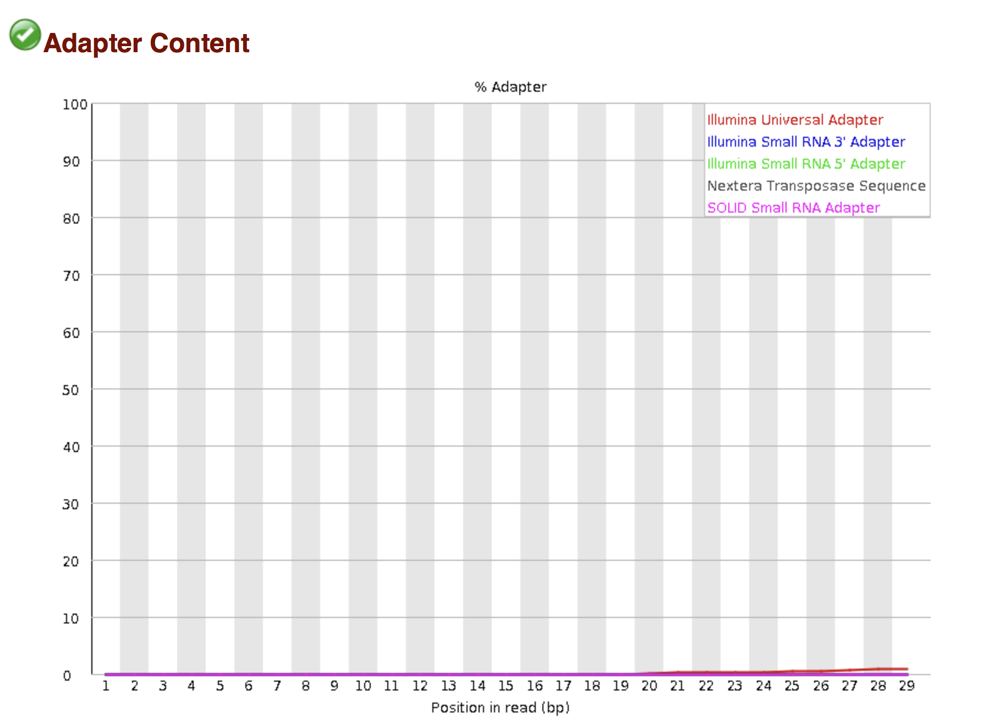
- Trimmomatics
FastQC gives a global vision the quality of the sample. If it is not optimal, it is advisable to use Trimmomatics software to filter poor quality reads and trim residual adapters.
Trimmomatics has a variety of options to clean the reads. Read the manual for more information. However, a command for Trimmomatics could look something like the command below. In this case it would perform adapter removal, and perform a scan of the read with a 10-base wide sliding window, cutting when the average quality per base drops below 20.
$ java -jar trimmomatic.jar \
PE \ # paired-end
-threads 4 \ # number of threads
SampleName_1.fastq \ # fastq file for fw reads
SampleName_2.fastq \ # fastq file for rev reads
SampleName_1_clean.fastq \ # clean fastq for fw reads
SampleName_1_unpaired.fastq \ # fastq for unpaired remaining fw reads
SampleName_2_clean.fastq \ # clean fastq for rev reads
SampleName_2_unpaired.fastq \ # fastq for unpaired remaining rev reads
ILLUMINACLIP:TruSeq3-PE.fa:2:30:10 \ # cut adapter from the read.
SLIDINGWINDOW:10:20 # sliding window trimmingQuestion
How could you check that the trimming performed well?
Solution
Once samples passed through Trimmomatics, they should perform better on the quality tests run by FastQC. You could re-run FastQC on your clean fastq files to see whether adapters were correctly removed and if the per base sequence quality is higher after trimming…
$ fastqc SampleName_1_clean.fastq1.5 Alignment
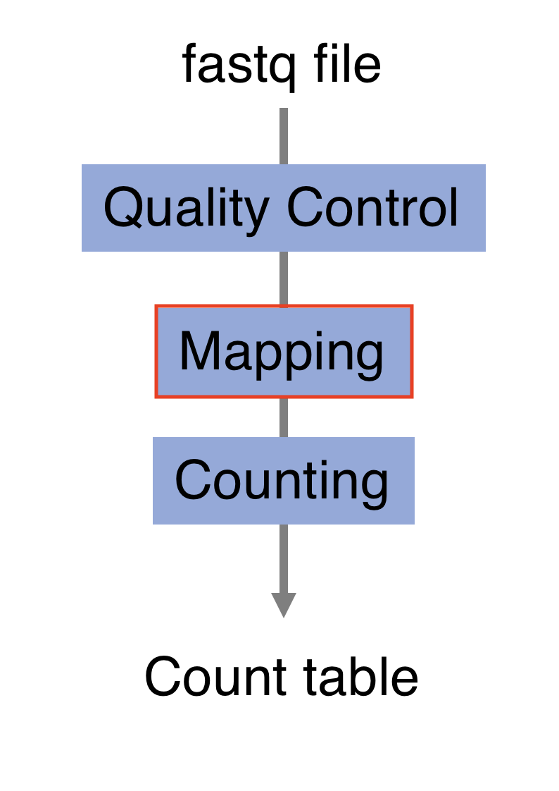
Next step is to map the reads to determine where in the genome the reads originated from. Many different aligners are available such as HISAT2, STAR, BWA, Salmon, Subread… There is no gold standard, but some tools are better suited for particular NGS analyses (Giacomo et al. 2017)… In the case of RNAseq, it is important to use an aligner able to handle spliced reads.

Here we show an example of what the command could look like when using
HISAT2 aligner,
launched with default parameters. In this basic configuration,
mandatory parameters are of course the fastq file(s) and the sequence
of the genome on which the reads have to be aligned. In practical, the
genome’s sequence is not given as it is but in an indexed form
1. Of course many of other parameters can be fine
tuned (see the
manual for more
details). The alignment output file data is a sam file (see below).
$ hisat2 \
-p 6 \ # number of threads
-x genome_index \ # index for the reference genome
-1 SampleName_1_clean.fastq \ # clean fastq_file for fw reads
-2 SampleName_2_clean.fastq \ # clean fastq_file for rev reads
-S SampleName.sam # sam file nameIt is recommended to pay attention to the HISAT2 report to check the alignment rate. For a PE-end alignment it could look like this:
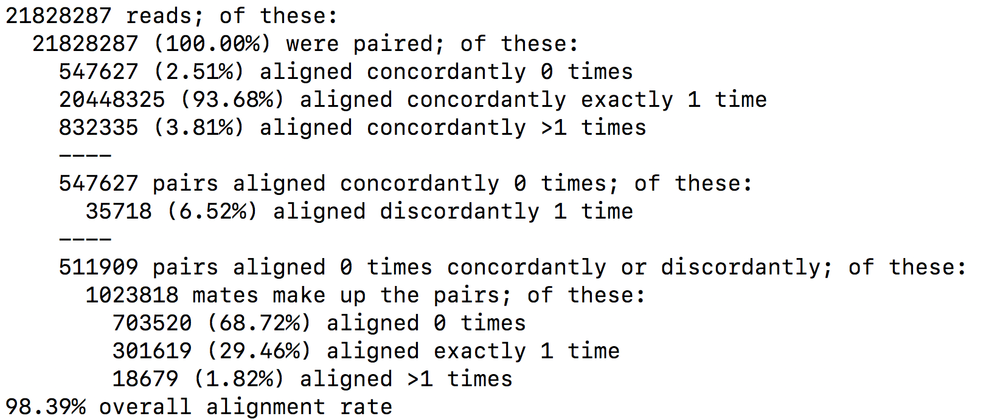
SAM format
The SAM format is a generic format for storing large nucleotide sequence alignments. In a SAM file, each entry gives the alignment information for a single read. Each entry has 11 mandatory fields for essential mapping information and a variable number of other fields for aligner specific information. An example of few entries from a SAM file is displayed below.
## DRR016707.26395247 147 1 19626495 60 101M = 19626490 -106 GTAACAATGTTATCAGTAATGCTTTAAACTCCAGCACCTGGTTATGCATTTGAAACCAAGTCTGTTTCTTGTTTTGTATTTTCTCTCTGGAAGTTGTAAGG DDDDDDDDDDDDDEEEEEEEFFFFFFHCHHHJJJHHJJJJJJJJJJJJIHFJJIHJJJJJJJJJJJJJJJJJJJJJJJJJJJJIJJJJHHHHHFFFFFCCC AS:i:0 XN:i:0 XM:i:0 XO:i:0 XG:i:0 NM:i:0 MD:Z:101 YS:i:0 YT:Z:CP NH:i:1
## DRR016707.26395247 99 1 19626490 60 101M = 19626495 106 CTTCTGTAACAATGTTATCAGTAATGCTTTAAACTCCAGCACCTGGTTATGCATTTGAAACCAAGTCTGTTTCTTGTTTTGTATTTTCTCTCTGGAAGTTG CCCFFFFFHHHHHJIJJJJIJJJJJJJJJJIJJJJJJJJJJJJJJJHHIHIJJJIJJHIJJJIIIIIIJGIJJJJDHJJJHHHHHHHFFFFFFEDACEEDD AS:i:0 XN:i:0 XM:i:0 XO:i:0 XG:i:0 NM:i:0 MD:Z:101 YS:i:0 YT:Z:CP NH:i:1
## DRR016707.34969377 163 1 19626487 60 101M = 19626493 107 ATTCTTCTGTAACAATGTTATCAGTAATGCTTTAAACTCCAGCACCTGGTTATGCATTTGAAACCAAGTCTGTTTCTTGTTTTGTATTTTCTCTCTGGAAG CC@FFFFFHFHFFHGGJCIFJGHIIIIGIIIIJIIJJJIGIIIIIIGII?:BFHGHIIIIGEHHHGIIDGGH@GGIGHJGHHHHCEHDEFDDFFEEECCEC AS:i:0 XN:i:0 XM:i:0 XO:i:0 XG:i:0 NM:i:0 MD:Z:101 YS:i:0 YT:Z:CP NH:i:1
## DRR016707.34969377 83 1 19626493 60 101M = 19626487 -107 CTGTAACAATGTTATCAGTAATGCTTTAAACTCCAGCACCTGGTTATGCATTTGAAACCAAGTCTGTTTCTTGTTTTGTATTTTCTCTCTGGAAGTTGTAA CDDDDDDDDDDDDECEEEEEFFFFD?=HHHHGIIGEGIGIIIHIGDIHHGGGIIHGHIIIIGIIIGIGEIIGGGIIIIGIIIIGHDIIFHHHHFFBDD?C@ AS:i:0 XN:i:0 XM:i:0 XO:i:0 XG:i:0 NM:i:0 MD:Z:101 YS:i:0 YT:Z:CP NH:i:1
## DRR016707.42561021 161 1 19626495 60 100M1S = 19626494 0 GTAACAATGTTATCAGTAATGCTTTAAACTAAAGCACCTGGTTATGCATTTGAAACCAAGTCTGTTTCTTGTTTTGTATTTTCTCTCTGGAAGTTGTAAGA ?8?B1:BDD,,2<:C<2A<<,+A?CBFFAE<+<+2A?EEBD99:D<*?B:*:D9B:DD/BDED@)=8=B;@=)).=(=@;7A)7.==>;3);@AAA>A@3; AS:i:-8 XN:i:0 XM:i:2 XO:i:0 XG:i:0 NM:i:2 MD:Z:30C0C68 YT:Z:UP NH:i:1
## DRR016707.42561021 81 1 19626494 60 101M = 19626495 0 TGTAACAATGTTATCAGTAATGCTTTAAACTCCAGCACCTGGTTATGCATTTGACACCAAGTCTGTTTCTTGTTTTGTATTTTCGCTCTGGAAGTTGTAAG (9(??==3??>==;5(55((6.((9>;..;67>)>).5(A;;>=/))8.=>9)((?AB?92=00*;=::1)=:3=74=A7<)0<+<AAAB?=<+4AA<;== AS:i:-5 ZS:i:-19 XN:i:0 XM:i:2 XO:i:0 XG:i:0 NM:i:2 MD:Z:54A29T16 YT:Z:UP NH:i:1
## DRR016707.43465443 163 1 19626483 60 101M = 19626486 104 TGCCATTCTTCTGTAACAATGTTATCAGTAATGCTTTAAACTCCAGCACCTGGTTATGCATTTGAAACCAAGTCTGTTTCTTGTTTTGTATTTTCTCTCTG B@@FAFFFHHHHHHIIIIJJJHJJIJJIIJJJJJJJFJJJJJJJJJJJJJHIJFHJJIJJJIJJIIJIJJHIHHIIIJJJJJHEHHHFEFFFFFEDEEEEE AS:i:0 XN:i:0 XM:i:0 XO:i:0 XG:i:0 NM:i:0 MD:Z:101 YS:i:-1 YT:Z:CP NH:i:1
## DRR016707.43465443 83 1 19626486 60 100M1S = 19626483 -104 CATTCTTCTGTAACAATGTTATCAGTAATGCTTTAAACTCCAGCACCTGGTTATGCATTTGAAACCAAGTCTGTTTCTTGTTTTGTATTTTCTCTCTGGAG DDDDDDCDDDDCCDEEEEDFFFFFDBHHHHHGJJGHDJIJJIGIHJGGJJJJJJJJJJJJJHG?JJJJJJJJJJJIIJJJJIJJJJJIGHGHHFFFFFCCC AS:i:-1 ZS:i:-12 XN:i:0 XM:i:0 XO:i:0 XG:i:0 NM:i:0 MD:Z:100 YS:i:0 YT:Z:CP NH:i:1
## DRR016707.64407509 147 1 19626484 60 101M = 19626484 -101 GCCATTCTTCTGTAACAATGTTATCAGTAATGCTTTAAACTCCAGCACCTGGTTATGCATTTGAAACCAAGTCTGTTTCTTGTTTTGTATTTTCTCTCTGG DDDDDCDDDDDDEEDEEEEFFFFFFHHHHHHJJIJIGHFIHJJJIHFIHHFJJJJJIJJJJJJJIHJJJJJIJJJJJJJJJJJJJJJJHHHHHFFFFFBB@ AS:i:0 XN:i:0 XM:i:0 XO:i:0 XG:i:0 NM:i:0 MD:Z:101 YS:i:0 YT:Z:CP NH:i:1
## DRR016707.64407509 99 1 19626484 60 101M = 19626484 -101 GCCATTCTTCTGTAACAATGTTATCAGTAATGCTTTAAACTCCAGCACCTGGTTATGCATTTGAAACCAAGTCTGTTTCTTGTTTTGTATTTTCTCTCTGG CCCFFFFFHHHHHJJJJJJJIJJJJJJJJJJJJJJJJJJJJJIJJJJJJIJJDGIJJJJJJJJCGIJJJIIHHJJJHHIJJJHHHHHDFFFFFFEEEEEED AS:i:0 XN:i:0 XM:i:0 XO:i:0 XG:i:0 NM:i:0 MD:Z:101 YS:i:0 YT:Z:CP NH:i:1- Field 1: Sequence ID
- Field 2: SAM Flag. It gives information about the read (is it paired, aligned, is the mate read properly aligned…)
- Field 3: Chromosome where alignment occurs
- Field 4: Position of alignment
- Field 5: Mapping quality score (read uniquely mapped (60), multiply mapped (1) or unmapped (0))
- Field 6: CIGAR string. It is a representation of alignment indicating positions of match/mismatch/deletion/insertion compared to the reference.
- Field 7: Reference name of the mate (Set to ‘=’ if the mate’s reference sequence is the same as this alignment’s)
- Field 8: Position of mate
- Field 9: Inferred fragment length
- Field 10: Read sequence (reverse-complemented if aligned to the reverse strand)
- Field 11: Base quality (Phred score)
- Field 12: Optional. See hisat2 manual for more information.
BAM format
The BAM file is a compressed binary version of SAM file. SAM files can be easily converted into BAM files using samtools, and it is sometimes mandatory to sort the SAM/BAM by chromosomal coordinates for downstream applications.
samtools view -Sb SampleName.sam | samtools sort > SampleName.bamAlignment visualisation
Alignments described in BAM files can easily be viewed using IGV (Integrative Genomics Viewer), a very useful interactive tool for the visual exploration of genomic data.
Visualising the alignments is not part of the processing pipeline but sometimes it can be useful..
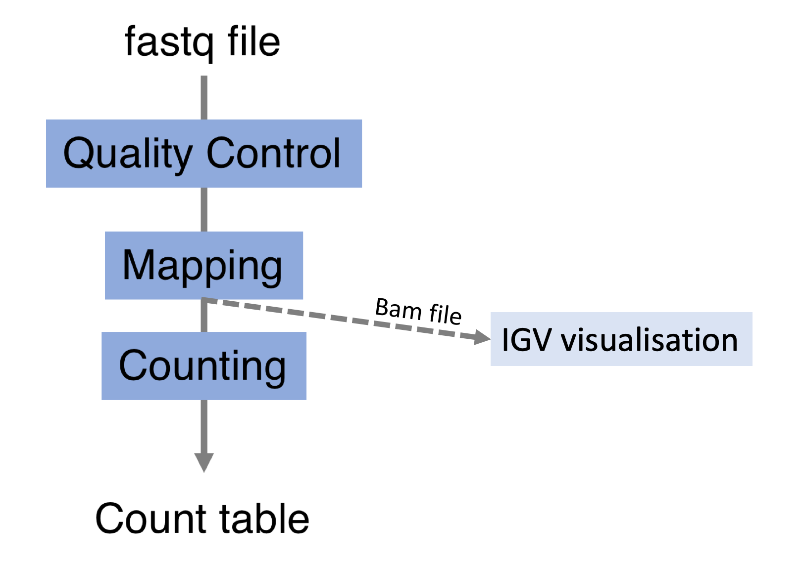
IGV requires that BAM files have an associated index file2. Samtools can be used to index the BAM file. The following command would create the indexed SampleName.bam.bai file.
samtools index SampleName.bamBam file can be loaded in IGV3. Below is an example of visualisation of a bam file using IGV, focusing on CDKN1A gene.
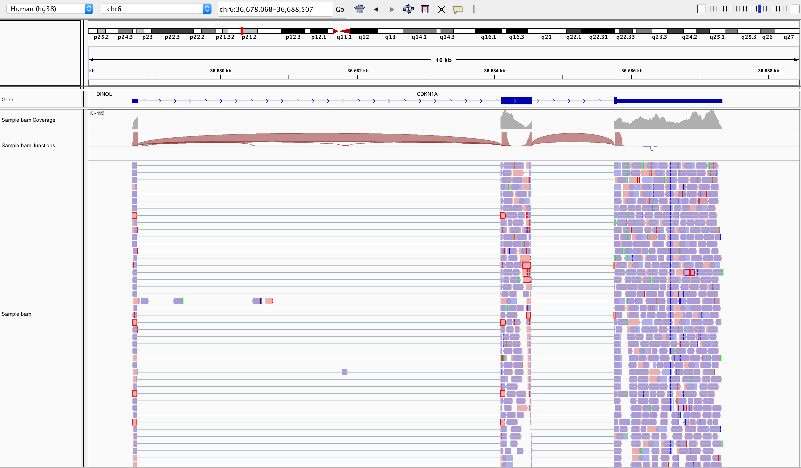
Loading a BAM file creates 3 associated tracks:
- Coverage Track to view depth of coverage
- Splice Junction Track which provides an alternative view of reads spanning splice junctions
- Alignment Track to view individual aligned reads
1.6 Counting
Now comes the quantification step. It can be performed with several tools such as htseq-count or FeatureCounts. We will describe the latter as it runs much faster. It was developed for counting reads to genomic features such as genes, exons, promoters and genomic bins. FeatureCounts takes as input SAM/BAM files and an annotation file (such as a gtf file) containing chromosomal coordinates of features.
The Gene Transfer Format (GTF) is a widely used format for storing gene annotations. Human and mouse GTF files can be downloaded easily from Ensembl or from the UCSC table browser. The first few lines of gtf annotation file for human genome assembly GRCh38 look like this:
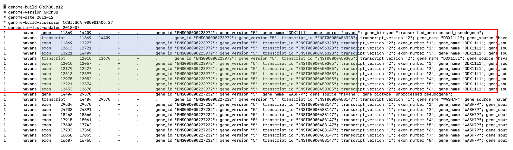
FeatureCounts will count the number of uniquely mapped reads assigned to features (e.g. an exon) or meta-features (e.g. a gene) of the gtf file. When summarising reads at gene level, read counts obtained for exons belonging to the same gene will be added up to yield the read count for the corresponding gene. Note that an exon-spanning read will be counted only once for the corresponding gene even if it overlaps with more than one exon.
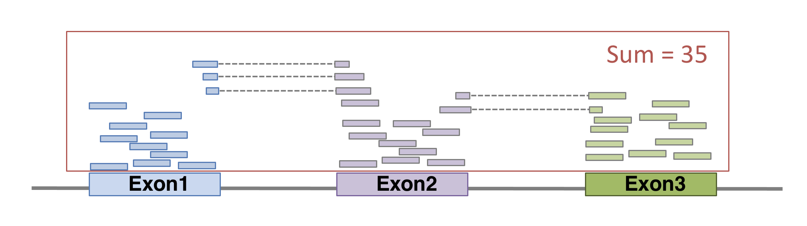
FeatureCounts could be launched with the following command. As usual, many of other parameters can be fine-tuned (see the manual for more details).
featureCounts \
-p \ # paired-end
--countReadPairs \ # fragments counted instead of reads
-a annotations.gtf \ # name of the annotation file
-t exon \ # feature type in GTF annotation
-g gene_id \ # Meta-features used in GTF annotation
-s 0 \ # strand-specificity
-o SampleName_counts.tsv \ # Name of the output file
SampleName.bam # bam fileHere is an example of FeatureCounts output file. The last column gives the raw counts of each gene in that sample.
## # A tibble: 58,735 × 7
## Geneid Chr Start End Strand Length ../processed_data/ba…¹
## <chr> <chr> <chr> <chr> <chr> <dbl> <dbl>
## 1 ENSG00000223972 1;1;1;1;1;1… 1186… 1222… +;+;+… 1735 0
## 2 ENSG00000227232 1;1;1;1;1;1… 1440… 1450… -;-;-… 1351 14
## 3 ENSG00000278267 1 17369 17436 - 68 8
## 4 ENSG00000243485 1;1;1;1;1 2955… 3003… +;+;+… 1021 0
## 5 ENSG00000284332 1 30366 30503 + 138 0
## 6 ENSG00000237613 1;1;1;1;1 3455… 3517… -;-;-… 1219 0
## 7 ENSG00000268020 1 52473 53312 + 840 0
## 8 ENSG00000240361 1;1;1;1 5759… 5765… +;+;+… 1414 0
## 9 ENSG00000186092 1;1;1;1 6541… 6543… +;+;+… 2618 0
## 10 ENSG00000238009 1;1;1;1;1;1… 8929… 9162… -;-;-… 3726 3
## # ℹ 58,725 more rows
## # ℹ abbreviated name: ¹`../processed_data/bam/sample1.bam`1.7 Preparing the count matrix
The aim of an RNA-seq experiment is often to perform a differential expression analysis, to identify genes with significantly different expression levels between conditions.
To do so, the FASTQ files from each sample first need to be processed individually, and a count matrix containing the number of reads for each gene in each sample must then be generated.
The easiest way to obtain the count matrix is to run the counting step
(using featureCounts) on all BAM files at the same time.
featureCounts \
-p \
--countReadPairs \
-a annotations.gtf \
-t exon \
-g gene_id \
-s 0 \
-o all_samples_counts.tsv \ # Name of the output file
*.bam # All bam filesHere is an example of a featureCounts output file run on 6 BAM
files. The last 6 columns of the table give the raw counts for each
gene in each sample. You can download it
here.
## # A tibble: 6 × 12
## Geneid Chr Start End Strand Length Sample1.bam Sample2.bam Sample3.bam
## <chr> <chr> <chr> <chr> <chr> <dbl> <dbl> <dbl> <dbl>
## 1 ENSG00000… 1;1;… 1186… 1222… +;+;+… 1735 0 0 0
## 2 ENSG00000… 1;1;… 1440… 1450… -;-;-… 1351 14 28 17
## 3 ENSG00000… 1 17369 17436 - 68 8 4 3
## 4 ENSG00000… 1;1;… 2955… 3003… +;+;+… 1021 0 0 0
## 5 ENSG00000… 1 30366 30503 + 138 0 0 0
## 6 ENSG00000… 1;1;… 3455… 3517… -;-;-… 1219 0 0 0
## # ℹ 3 more variables: Sample4.bam <dbl>, Sample5.bam <dbl>, Sample6.bam <dbl>The final count matrix can then be generated by subsetting the columns of interest.
## # A tibble: 6 × 7
## Geneid Sample1.bam Sample2.bam Sample3.bam Sample4.bam Sample5.bam Sample6.bam
## <chr> <dbl> <dbl> <dbl> <dbl> <dbl> <dbl>
## 1 ENSG0… 0 0 0 0 0 1
## 2 ENSG0… 14 28 17 40 16 13
## 3 ENSG0… 8 4 3 1 1 6
## 4 ENSG0… 0 0 0 0 0 0
## 5 ENSG0… 0 0 0 0 0 0
## 6 ENSG0… 0 0 0 0 0 0And finally, the column names can be simplified.
## # A tibble: 6 × 7
## Geneid Sample1 Sample2 Sample3 Sample4 Sample5 Sample6
## <chr> <dbl> <dbl> <dbl> <dbl> <dbl> <dbl>
## 1 ENSG00000223972 0 0 0 0 0 1
## 2 ENSG00000227232 14 28 17 40 16 13
## 3 ENSG00000278267 8 4 3 1 1 6
## 4 ENSG00000243485 0 0 0 0 0 0
## 5 ENSG00000284332 0 0 0 0 0 0
## 6 ENSG00000237613 0 0 0 0 0 0## Sample1 Sample2 Sample3 Sample4 Sample5 Sample6
## ENSG00000223972 0 0 0 0 0 1
## ENSG00000227232 14 28 17 40 16 13
## ENSG00000278267 8 4 3 1 1 6
## ENSG00000243485 0 0 0 0 0 0
## ENSG00000284332 0 0 0 0 0 0
## ENSG00000237613 0 0 0 0 0 0This count matrix will be the starting point of a differential expression analysis.
Questions
Inspect the count table.
- How many genes are tested ?
- How many reads were assigned to genes in each sample?
- Inspect the counts.
- What is the maximum value in each sample?
- How many genes have zero counts in each sample?
- Plot the distributions of counts for each sample. What do they look like?
Solution
- How many genes are tested ?
## [1] 58735- How many reads were assigned to genes in each sample?
## Sample1 Sample2 Sample3 Sample4 Sample5 Sample6
## 10527830 18577116 15893966 15302122 15767968 15752882- Inspect the counts.
- What is the maximum value in each sample?
- How many genes have zero counts in each sample?
## Sample1 Sample2 Sample3 Sample4
## Min. : 0.0 Min. : 0.0 Min. : 0.0 Min. : 0.0
## 1st Qu.: 0.0 1st Qu.: 0.0 1st Qu.: 0.0 1st Qu.: 0.0
## Median : 0.0 Median : 0.0 Median : 0.0 Median : 0.0
## Mean : 179.2 Mean : 316.3 Mean : 270.6 Mean : 260.5
## 3rd Qu.: 6.0 3rd Qu.: 11.0 3rd Qu.: 8.0 3rd Qu.: 8.0
## Max. :143371.0 Max. :183617.0 Max. :178564.0 Max. :187194.0
## Sample5 Sample6
## Min. : 0.0 Min. : 0.0
## 1st Qu.: 0.0 1st Qu.: 0.0
## Median : 0.0 Median : 0.0
## Mean : 268.5 Mean : 268.2
## 3rd Qu.: 9.0 3rd Qu.: 8.0
## Max. :151128.0 Max. :160159.0## Sample1 Sample2 Sample3 Sample4 Sample5 Sample6
## 36035 33952 35021 35473 35196 35394- Plot the distributions of counts for each sample. What do they look like?
as_tibble(mat, rownames = "gene") |>
pivot_longer(names_to = "sample", values_to = "counts", -gene) |>
ggplot(aes(x = log2(counts + 1))) +
geom_histogram(bins = 20) +
facet_wrap(~ sample)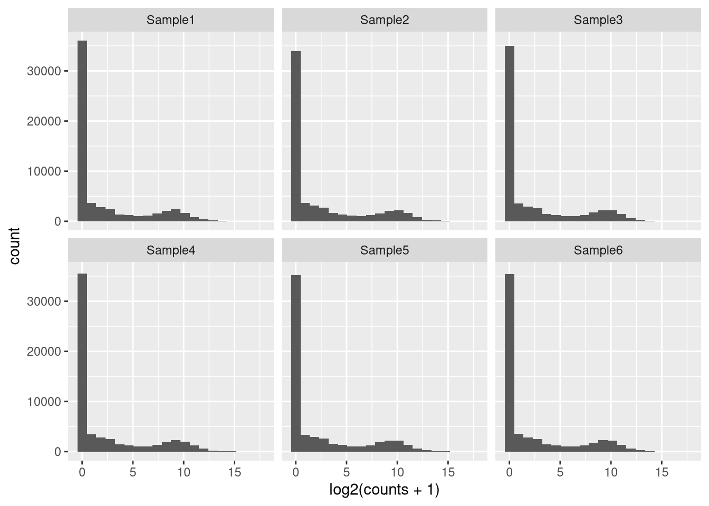
Note that a “pseudo-count” was added before the log2 transformation of the counts, to avoid elimination of counts equal to zero.
References
Genome indexing allows the aligner to quickly find potential alignment sites for query sequences in a genome, which saves considerable time during alignment. Frequently used genome (human, mouse, rat…) already have indexed versions that can be downloaded directly. When working with another reference genome, a specific indexed genome has to be built.↩︎
Indexing a BAM file allows IGV to quickly extract alignments overlapping particular genomic regions↩︎
Note that the index file must reside in the same directory as the bam file that it indexes, and it must have the same basename↩︎